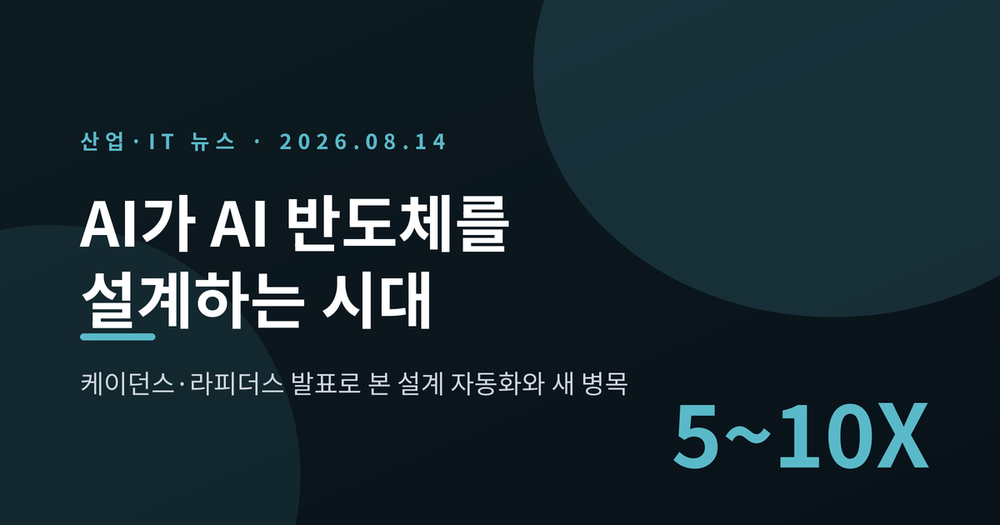
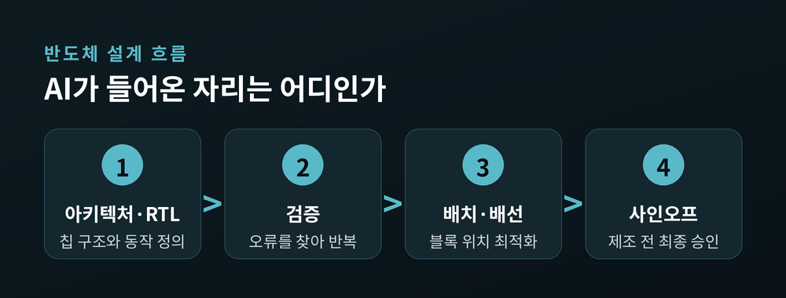
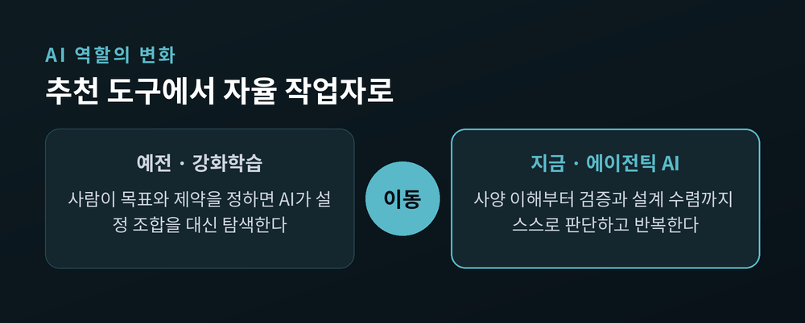
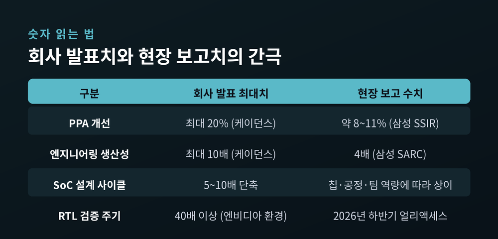
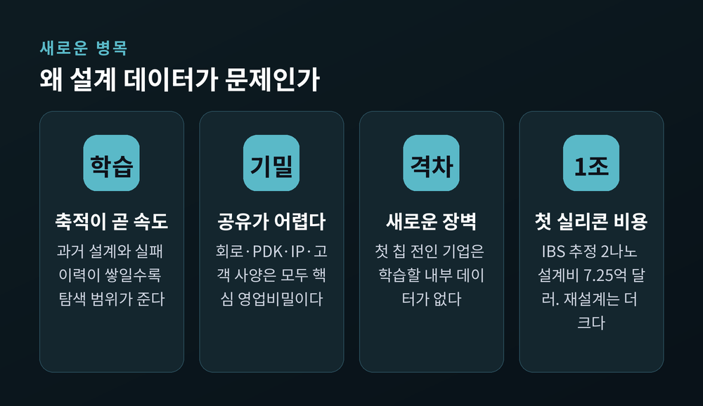
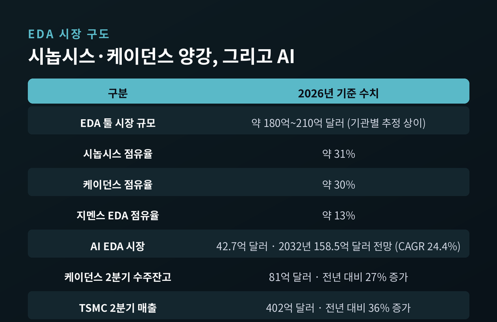
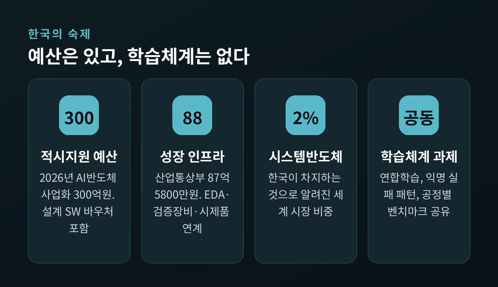

AI 반도체 설계 자동화, 설계시간 5~10배 단축과 새 병목 설계데이터
이번 글에서는 AI가 AI 반도체를 설계하기 시작한 흐름을 정리해 보겠습니다. 케이던스와 라피더스의 발표를 실제 수치로 확인하고, 그 뒤에 남는 문제까지 함께 살펴봅니다.

세 줄 요약
- 케이던스는 Cerebrus AI Studio가 SoC 설계시간을 5~10배 단축하고 전력·성능·면적을 최대 20% 개선한다고 밝혔습니다. 회사가 제시한 수치입니다.
- 일본 라피더스는 2026년 7월 케이던스와 손잡고 에이전틱 AI 설계환경을 도입해, 첨단 SoC 설계 턴어라운드 타임을 최대 2배 개선하겠다는 목표를 내놨습니다.
- 미세공정 다음 병목은 '설계 데이터'로 옮겨가고 있습니다. 도구는 돈으로 살 수 있지만, 학습에 쓸 과거 설계 자산은 살 수 없기 때문입니다.
두 건의 발표가 같은 방향을 가리켰습니다
먼저 케이던스입니다.
케이던스는 2025년 5월 7일 Cadence Cerebrus AI Studio를 공개했습니다. 회사는 이 제품을 "업계 최초의 에이전틱 AI 기반 멀티블록·멀티유저 SoC 설계 플랫폼"이라고 소개했습니다.
숫자는 이렇습니다. SoC 전체 설계 사이클 타임 5~10배 단축, 엔지니어링 생산성 최대 10배 향상, 전력·성능·면적(PPA) 최대 20% 개선입니다.
다음은 라피더스입니다.
2026년 7월 16일, 일본 라피더스와 케이던스가 첨단 노드 SoC 설계를 위한 협력을 발표했습니다. 케이던스의 InnoStack AI Super Agent를 라피더스의 자체 설계 솔루션 Raads에 통합하는 내용입니다. 목표는 명확합니다. 기존 설계 흐름 대비 턴어라운드 타임(TAT) 최대 2배 개선입니다.
라피더스는 이 발표와 함께 Raads Navigator와 Raads Indicator라는 도구 두 개를 추가했습니다. 품질 보증과 설계 이슈 해결을 돕는 역할입니다.
고이케 아츠요시 라피더스 CEO는 자사 IIM 시설을 두고 "반도체 제조의 거의 모든 단계에 AI가 통합된, 가장 진보한 AI 네이티브 파운드리가 될 것"이라고 말했습니다.
아니루드 데브간 케이던스 CEO의 표현은 조금 더 기술적입니다. "첨단 노드 SoC 설계는 개별 작업만 최적화하는 것이 아니라, 설계 수명주기 전반의 복잡한 워크플로우를 조율할 수 있는 AI 에이전트를 요구하고 있습니다."
EDA가 무엇인지부터 짚겠습니다
전공자가 아니라면 EDA라는 말이 낯설 것입니다.
EDA(Electronic Design Automation)는 전자설계자동화의 줄임말입니다. 반도체 칩을 설계하고 검증하는 소프트웨어 도구 묶음을 뜻합니다.
왜 필요할까요. 요즘 칩 하나에는 트랜지스터가 수백억 개 들어갑니다. 사람이 손으로 배치할 수 있는 규모가 아닙니다.
비유하자면 EDA는 도시 설계용 캐드(CAD) 프로그램에 가깝습니다. 도로와 건물, 전기와 상하수도를 한 화면에서 배치하고, 규정을 위반하지 않았는지 자동으로 검사해 주는 도구입니다.
반도체 설계는 대체로 여덟 단계를 거칩니다. 아키텍처 탐색 → RTL 작성 → 기능검증 → 논리합성 → 플로어플래닝 → 배치·배선 → 전력·타이밍 분석 → 사인오프입니다.
여기서 설계자는 늘 같은 딜레마에 부딪힙니다. 하나를 좋게 만들면 다른 하나가 나빠집니다. 배선을 짧게 만들면 열이 몰립니다. 성능을 높이면 전력이 더 듭니다. 그리고 작은 오류 하나가 수백억원짜리 시제품을 통째로 무용지물로 만듭니다.
전력(Power)·성능(Performance)·면적(Area)의 앞글자를 딴 PPA가 반도체 설계의 3대 목표로 불리는 이유입니다. 세 값은 서로를 밀어냅니다.

예전엔 '추천 도구'였고, 지금은 '작업자'입니다
AI가 반도체 설계에 들어온 것은 최근 일이 아닙니다. 다만 역할이 달라졌습니다.
1단계는 강화학습 기반 탐색이었습니다.
구글 딥마인드의 알파칩이 대표적입니다. 칩 안의 큰 기능 블록을 어디에 놓을지 정하는 플로어플래닝 단계에 강화학습을 적용했습니다. 2021년 네이처 논문은 알파칩이 6시간 이내에 전문가와 비슷하거나 더 나은 배치를 만들었다고 보고했습니다.
구글은 2024년, 이 기술이 TPU v5e·v5p·트릴리엄 등 최근 3세대 AI 가속기와 액시온 데이터센터 CPU의 일부 블록 배치에 실제 쓰였다고 밝혔습니다. 미디어텍도 자사 첨단 칩에 확장 적용했다고 설명했습니다.
상용 도구로는 시놉시스의 DSO.ai가 2020년 먼저 나왔습니다. 설계 도구의 수많은 설정 조합을 강화학습으로 탐색하는 방식입니다. 성과는 구체적입니다. SK하이닉스는 DSO.ai를 적용해 셀 면적 15% 감소, 다이 크기 5% 축소를 달성했습니다. 삼성전자는 2021년 국내 최초로 모바일 AP 설계에 이 도구를 적용했습니다.
쉽게 말하면 이 단계의 AI는 '경우의 수를 대신 돌려보는 조수'였습니다. 목표와 제약은 사람이 정하고, AI는 그 안에서 최적점을 찾았습니다.
2단계가 지금의 에이전틱 AI입니다.
차이는 '스스로 다음 작업을 고르는가'에 있습니다.
케이던스는 2026년 6월 1일 컴퓨텍스에서 ChipStack AI Super Agent를 공개했습니다. 사양을 이해하고, RTL을 만들고, 검증계획을 세우고, 시뮬레이션을 돌리고, 디버깅한 뒤 설계 수렴까지 스스로 반복하는 구조입니다. 엔비디아의 Nemotron 모델과 OpenShell 런타임이 결합됐습니다.
회사 설명에 따르면 엔비디아 적용 환경에서 RTL 검증 주기가 40배 이상 빨라졌습니다. 통상 5주 걸리던 검증 반복이 하루 이내로 줄었다는 이야기입니다.
시놉시스도 같은 길을 갑니다. AgentEngineer 기술 기반의 자율 워크플로우를 2026년 DAC에서 공개했고, 7월 27일에는 AMD·마이크로소프트와의 협력을 발표했습니다. AMD의 초기 평가에서 디버그 사이클 타임이 25~40% 줄었다고 합니다.
정리하면 이렇습니다. 조수가 담당자가 됐습니다.

발표된 최대치와 현장의 실제 수치는 다릅니다
여기서 한 가지는 분명히 하고 넘어가야 합니다.
5~10배, 20%, 40배 같은 숫자는 모두 도구를 만든 회사가 제시한 수치입니다. 칩 종류와 공정, 팀 역량에 따라 결과는 달라집니다.
실제 고객이 밝힌 숫자를 보면 간극이 보입니다.
케이던스가 자사 블로그에 인용한 사례부터 보겠습니다. 삼성 반도체 인도 연구소(SSIR)의 발라지 사우리라잔 부사장은 "Cerebrus AI Studio로 SoC 서브시스템에서 약 8~11%의 PPA 개선을 달성했다"고 밝혔습니다. 최대 20%와는 거리가 있습니다.
삼성 오스틴 연구개발센터(SARC)의 베니 카이트비안 수석부사장은 "전체 생산성 4배 개선을 얻었다"고 말했습니다. 최대 10배와 역시 차이가 납니다.
ChipStack의 40배 수치도 조건을 봐야 합니다. 이 기능의 레벨5 자율 역량은 2026년 하반기 얼리액세스 고객에게 먼저 제공됩니다. 광범위한 상용성과 비용효과는 아직 검증 단계입니다.
알파칩을 둘러싼 재현성 논쟁도 남아 있습니다. 구글은 2024년 모델 가중치와 추가 설명을 공개하며 반박했습니다. 반면 최첨단 칩 데이터는 영업비밀이어서, 외부 연구자가 같은 조건에서 성능을 완전히 검증하기는 어렵다는 지적이 이어집니다.
과장 없이 말하면 이렇습니다. 방향은 확실하고, 배수는 아직 확실하지 않습니다.

진짜 병목은 설계 데이터로 옮겨갔습니다
이 대목이 이번 흐름의 핵심입니다.
AI 설계도구는 쓴 만큼 이력을 쌓습니다. 어떤 설정이 타이밍을 개선했는지, 어떤 배치가 전력 문제를 만들었는지, 검증에서 어떤 오류가 반복됐는지를 학습합니다. 그러면 다음 프로젝트에서 탐색해야 할 범위가 줄어듭니다.
케이던스가 Cerebrus AI Studio의 핵심 기능으로 '스마트 모델 리플레이'를 내세운 것도 같은 맥락입니다. 설계 간 학습을 옮겨오는 기능입니다. 삼성 SSIR도 이 기능 덕분에 설계 수렴이 빨라졌다고 언급했습니다.
결론은 이렇게 요약됩니다. "같은 도구를 써도, 과거 설계와 실패 데이터가 많은 기업이 더 빠른 답을 얻습니다."
문제는 이 데이터가 좀처럼 공유되지 않는다는 점입니다.
반도체 설계 데이터는 일반 문서보다 훨씬 폐쇄적입니다. 회로 구조, 공정설계키트(PDK), 설계자산(IP), 고객 사양, 검증 결과가 모두 기업의 핵심 영업비밀입니다. 클라우드나 외부 AI 모델에 이 데이터를 넣는 순간 유출과 재학습, 접근권한 문제가 동시에 생깁니다.
그래서 격차가 벌어집니다. 대기업은 여러 세대의 설계·양산 데이터를 갖고 있고 전용 컴퓨팅 자원도 투입할 수 있습니다. 반면 스타트업은 첫 칩을 만들기 전까지 학습할 내부 데이터 자체가 없습니다. 고가 EDA 라이선스와 IP, 클라우드 계산비까지 동시에 부담해야 합니다.
AI가 진입장벽을 낮추는 동시에, 데이터가 없는 기업에는 새 장벽이 되는 구조입니다.
비용 측면에서도 초점이 이동합니다. IBS는 2나노급 칩 설계 비용을 약 7억 2,500만 달러(약 1조 원)로 추정한 바 있습니다. 이 정도 규모에서 진짜 무서운 것은 설계 인건비가 아니라 첫 실리콘 실패비용입니다.
설계 기간이 20% 줄어도 재설계가 발생하면 전체 비용은 오히려 커집니다. 반대로 설계 시간이 비슷해도 재테이프아웃을 피하면 효과는 훨씬 큽니다.
그래서 성과지표도 바뀌어야 합니다. AI가 만든 설계안 수나 돌린 시뮬레이션 횟수가 아닙니다. 사양에서 테이프아웃까지의 기간, 타이밍·전력 목표 달성률, 검증 커버리지, 오류 발견 시점, 첫 실리콘 성공률, 양산수율입니다.

시놉시스와 케이던스, 그리고 그 위의 이해관계
EDA 시장은 사실상 양강 구도입니다.
시장조사기관 추정에 따르면 2026년 EDA 툴 시장 규모는 대략 180억~210억 달러 수준입니다. 기관마다 산출 기준이 달라 편차가 있습니다.
점유율은 시놉시스 약 31%, 케이던스 약 30%, 지멘스 EDA 약 13%로 파악됩니다. 상위 3사가 4분의 3가량을 가져갑니다.
성장 속도는 AI 쪽이 훨씬 빠릅니다. AI EDA 시장은 2026년 42.7억 달러에서 2032년 158.5억 달러로, 연평균 24.4% 성장이 전망됩니다. 전체 EDA 시장 성장률의 약 3배입니다.
실적에도 그대로 나타납니다. 케이던스는 2026년 2분기 수주잔고가 81억 달러로 사상 최대를 기록했습니다. 전년 대비 27% 증가입니다. 연간 매출 성장률 가이던스도 1분기 17%에서 2분기 19%로 올렸습니다.
수요의 원천은 파운드리 쪽에서 확인됩니다. TSMC는 2026년 2분기 매출 402억 달러, 전년 대비 36% 증가를 기록했습니다. AI 매출이 잡히는 고성능컴퓨팅(HPC) 부문이 분기 매출의 66%를 차지했습니다. 연간 매출 성장률 가이던스도 '30% 이상'에서 '40% 소폭 상회'로 상향했습니다.
※ 위 기업 실적 수치는 산업 흐름을 설명하기 위한 인용이며, 투자 권유가 아닙니다. 투자 판단과 책임은 투자자 본인에게 있습니다.
여기에 파운드리의 역할 변화가 겹칩니다.
삼성 파운드리는 2026년 들어 두 회사 모두와 협력을 넓혔습니다. 케이던스와는 6월 2나노·3D-IC 협력 심화를 발표하며, 2세대 2나노 공정에 대한 에이전틱 AI 설계 플로우 인증을 확대했습니다. 시놉시스와는 5월 28일 SAFE 포럼에서 3세대 2나노급 공정용 양산 준비 설계 플로우를 공개했습니다.
라피더스의 접근은 조금 다릅니다. AI 설계를 소프트웨어 도입이 아니라 파운드리의 납기 경쟁력으로 묶었습니다. 설계 초기부터 제조와 패키징까지 데이터를 연결해 고객의 턴어라운드를 줄이겠다는 구상입니다.
파운드리가 웨이퍼만 찍어내는 회사에서, 설계 문제를 함께 푸는 서비스 기업으로 이동하고 있습니다.

국내 산업에는 어떤 숙제가 남는가
한국의 위치는 조금 기울어져 있습니다.
메모리와 첨단 파운드리 공정에서는 분명한 강점을 갖고 있습니다. 반면 시스템반도체 설계 생태계는 상대적으로 작습니다. 세계 시스템반도체 시장에서 한국 점유율은 약 2% 수준으로 알려져 있습니다. 삼성 등 대기업을 제외하면 0.8%까지 내려간다는 분석도 있습니다.
국내 팹리스는 EDA 소프트웨어, 검증장비, 설계 IP, 시제품 제작비를 동시에 짊어집니다. 국내 IP·EDA 업계가 취약해 해외 자원에 기댈 수밖에 없는 구조입니다.
정부도 이 문제를 인식하고 있습니다.
2026년 AI반도체 사업화 적시지원에 300억원이 배정됐습니다. 고비용 설계 소프트웨어 바우처와 전문 엔지니어 지원이 포함됩니다. 산업통상부는 2026년 시스템반도체 기업의 사무공간·EDA·검증장비·시제품 제작을 연계하는 성장 인프라에 87억 5,800만원을 지원할 계획입니다. 과학기술정보통신부와 정보통신산업진흥원은 2025년 AI반도체 최적화 설계와 설계 IP 활용에 최대 267억 3,000만원을 지원했습니다.
다만 한계도 뚜렷합니다.
라이선스 비용을 대신 내주는 방식만으로는 AI 설계 경쟁력이 생기지 않습니다. AI는 프로젝트마다 쌓인 설계·검증 결과를 학습해야 좋아집니다. 지원 기간이 끝나거나 기업이 도구를 바꾸면 데이터와 설정값은 흩어집니다. 다음 기업은 같은 시행착오를 처음부터 반복합니다.
현실적인 대안으로 세 가지가 거론됩니다. 데이터는 기업 안에 두고 학습 결과만 공유하는 연합학습, 익명화된 설계 실패 패턴 공유, 그리고 공정별 공통 벤치마크입니다.
성과지표를 바꾸자는 제안도 설득력이 있습니다. '도구를 몇 개 설치했는가'가 아니라 '설계 턴어라운드가 얼마나 줄었는가, 오류를 얼마나 일찍 찾았는가, 첫 실리콘 성공률이 올랐는가'로 말입니다.
앞으로 무엇을 지켜봐야 하는가
세 가지를 보시면 좋겠습니다.
첫째, 얼리액세스의 실적입니다. 케이던스 ChipStack의 레벨5 자율 기능은 2026년 하반기에 초기 고객에게 열립니다. 라피더스의 2배 목표도 검증은 이제부터입니다. 발표된 배수가 실제 테이프아웃 결과로 이어지는지가 관건입니다.
둘째, 책임 구조입니다. 반도체는 소프트웨어처럼 배포 후 즉시 고칠 수 없습니다. 자동차·의료·방산용 칩은 오작동이 곧 안전사고입니다. 자율 에이전트가 만든 설계에 문제가 생기면 팹리스, EDA 기업, 파운드리, IP 공급사, 최종 사인오프를 승인한 엔지니어의 책임이 얽힙니다. 'AI가 추천했다'는 말로 제품 책임을 넘길 수는 없습니다.
셋째, 재현성입니다. 모델이 업데이트되면 같은 설계에서도 다른 결과가 나올 수 있습니다. 모델 버전, 입력 데이터, 실행한 도구, 사람이 수정한 내용과 승인 시점을 남기는 기록 체계가 필요해집니다. AI 설계의 진짜 인프라는 모델 자체보다, 결과를 재현하고 책임을 추적하는 설계 데이터의 계보일지 모릅니다.

정리하면 이렇습니다.
AI는 설계자를 대체하지 않았습니다. 설계자가 쓰던 시간의 용도를 바꿨습니다. 반복 설정과 수천 번의 검증 실행은 AI가 맡고, 사람은 제품의 목적과 아키텍처, 예외조건과 안전을 판단합니다.
그래서 경쟁의 기준도 옮겨갔습니다. 엔지니어가 몇 명인가에서, 데이터와 도구와 파운드리 피드백을 얼마나 빨리 학습하는가로 말입니다.
도구는 돈이 있으면 살 수 있습니다. 다만 지난 20년의 설계 이력은 어디서도 살 수 없습니다.
한국이 다음 10년에 무엇을 팔 것이냐고 물으신다면, 저는 웨이퍼가 아니라 그 위에 쌓인 설계의 기억이라고 답하겠습니다.